Final Project
The Roll-Aqua Barrel

Project theme
In the quest for creating meaningful and impactful designs, our team embarked on a mission to address one of the most pressing issues faced by Low and Middle-Income Countries (LMICs): access to clean and portable water.
The result of our collaborative efforts is the Aqua Barrel, a revolutionary solution designed to ease water transportation challenges and provide communities with a reliable source of purified water.
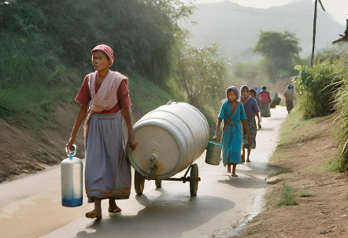LCDs often grapple with the arduous task of transporting water from distant sources to their communities. Furthermore, the water obtained is frequently contaminated, leading to widespread health issues. Recognizing this predicament, our team sought to develop an innovative solution that not only simplifies water transportation but also ensures that the water is safe for consumption.
User Research and SDGs
Population Growth:
Despite the fertility rate decreasing in less developed countries (LDCs) since the 1980s, their populations are still growing rapidly. From 2015 to 2020, the average number of children per woman in LDCs was four, while the global average was 2.5. Due to increased life expectancy without a corresponding decline in fertility, LDCs have an estimated population growth rate of 2.3%, twice the world average of 1.1%.
However, LDCs face challenges as they lack rapid improvements in productivity and employment. This rapid population growth increases the pressure on natural resources, hindering the achievement of a demographic dividend – a boost in economic growth resulting from demographic changes.
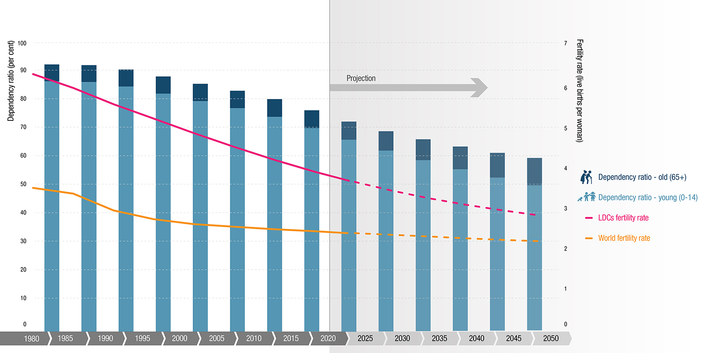
climate change:
The October-December 2022 season marked the fifth consecutive failed rainfall season, with both short and long rains falling below average since 2020. This resulted in the worst drought in 40 years (WMO, 2022, FAO 2022). The drought caused significant issues like harvest failures, poor pasture conditions, livestock losses, reduced surface water, and human conflicts, affecting 4.35 million people who require humanitarian aid (NDMA, 2022). Over 180,000 refugees from Somalia and South Sudan sought refuge in the drought-affected regions of Kenya and Ethiopia (UNHCR). 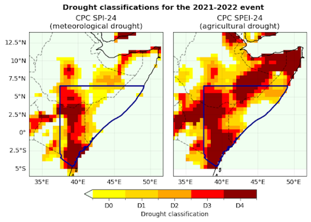
Figure 1: Left: Drought classifications based on Standardised Precipitation Index (SPI; US Drought Monitor, 2023), reflecting the magnitudes of precipitation deficit from Jan 2021-Dec 2022 relative to the 1980-2010 climatology in the CPC dataset.
Right: Drought classifications based on Standardised Precipitation Evapotranspiration Index (SPEI), reflecting the magnitudes of precipitation deficit from Jan 2021-Dec 2022 relative to the 1980-2010 climatology in the CPC dataset.
The bold black outline highlights the study region.
As of January 2023, approximately 9,210 metric tons of food and USD 7.29 million in cash-based transfers were distributed to aid the affected population (OCHA, 2023). Despite some reported rains in parts of Kenya by March 2023 (KMD, 2023), a quick recovery from the drought is unlikely, delaying improvements in food security until at least mid-2023.
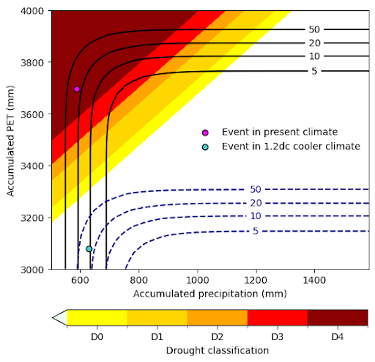
Figure 2: Joint distribution of 24-month precip and PET with corresponding SPEI drought classification.
The solid contours indicate return periods under the joint distribution in the current climate, while the dashed contours indicate the same return periods in a 1.2°C cooler climate.
The shaded contours represent different levels of drought severity.
The magenta point indicates the 2022 drought event in the current climate, with a joint return period of 26 years (uncertainty: 23-37 years), while the turquoise point shows an event of the equivalent severity in a 1.2°C cooler climate.
water scarcity
Global Water Stress Overview:New data from WRI’s Aqueduct Water Risk Atlas reveals that 25 countries, accommodating one-quarter of the global population, face extremely high water stress annually, utilizing almost their entire water supply. Additionally, around 4 billion people, comprising 50% of the world's population, experience highly water-stressed conditions for at least one month each year. 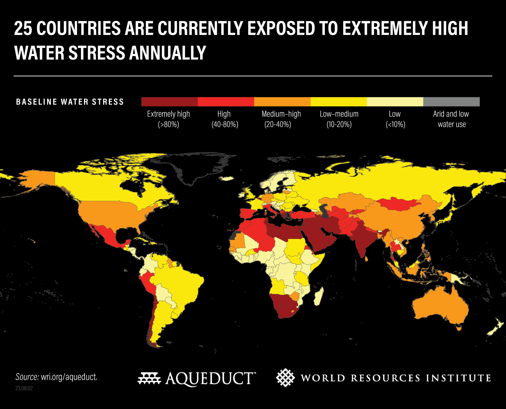
Impact on Lives and Resources: High water stress jeopardizes lives, jobs, food and energy security, as water is crucial for agriculture, livestock, energy production, human health, societal equity, and climate goals.
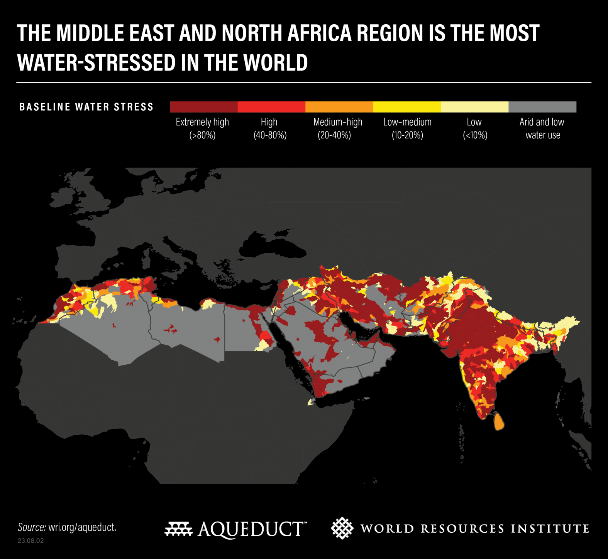
Factors Contributing to Water Stress:
Globally, increased water demand, driven by growing populations and industries, surpasses available resources. Lack of investment in water infrastructure, unsustainable water use policies, and climate change-induced variability further exacerbate water stress.
Countries Facing the Worst Water Stress:
Currently, 25 countries experience extreme water stress, using over 80% of their renewable water supply. The most water-stressed regions are the Middle East, North Africa, and South Asia.
Projected Worsening by 2050:
By 2050, an additional 1 billion people will face extreme water stress. Global water demand is set to increase by 20-25%, with political stability concerns in regions like the Middle East and North Africa.
Changing Water Demand Dynamics:
Sub-Saharan Africa anticipates a 163% increase in water demand by 2050, fostering economic growth but risking a 6% GDP decline due to inefficient water use. Meanwhile, water demand plateaus in wealthier nations.
Economic and Agricultural Impacts:
Rising water stress threatens 31% of global GDP ($70 trillion) by 2050. Water shortages pose risks to industrial interruptions, energy outages, and agricultural production losses, impacting global food security.
GDP Losses and Food Security:
India, China, Central Asia, and much of Africa could face GDP losses of 6-12% by 2050 due to inadequate water management. Global food security is at risk, requiring a 56% increase in food production to feed a projected population of 10 billion by 2050.
Figure 3. Current risk levels for water scarcity. The hatched areas indicate those places where risk is projected to increase by 2050. Data from WWF's Water Risk Filter.
Universal access to safe drinking water and sanitation facilities is an essential human right, recognised in the Sustainable Development Goals as crucial for preventing disease and improving human wellbeing.
Comprehensive, high-resolution estimates are important to inform progress towards achieving this goal.
We aimed to produce high-resolution geospatial estimates of access to drinking water and sanitation facilities.

Widespread Lack of Access:
Despite global progress, billions in LDCs still lack access to safe drinking water, sanitation, and hygiene .
Domestic Wastewater Treatment Challenges:
The level of domestic wastewater treatment remains very poor (below 30%) in Africa, exacerbating water quality issues .
Sustainable Development Goal (SDG) Targets:
SDGs emphasize universal access to drinking water, sanitation, and hygiene. However, achieving these targets by 2030 faces challenges in LDCs .
Imminent Global Water Crisis:
The UN warns of an imminent risk of a global water crisis, projecting a doubling of the urban population facing water scarcity in LDCs from 930 million in 2016 to 1.7–2.4 billion by 2050 .
Lack of Basic Sanitation:
A quarter of the world's population lacks safe drinking water, and 46% lacks access to basic sanitation, with significant proportions in LDCs facing these challenges.
Figure 4: Access to drinking water and sanitation indicators
Diseases people in LDCs face due to lack of drinkable water and therefore consumption of non-clear water
Globally, an estimated 633 million people lack access to safe water sources, 319 million of whom live in sub-Saharan Africa, and 2.4 billion of whom do not use improved sanitation, as defined by the WHO/UNICEF Joint Monitoring Programme .
Despite substantial progress made during the last decades, 11% of the global population are still not drinking improved water and only 64% are able to access improved sanitation . Diarrhea is the main killer of children, estimated to have killed 558,000 children aged 1−59 months in 2013 .
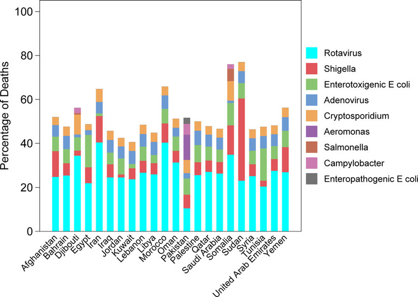 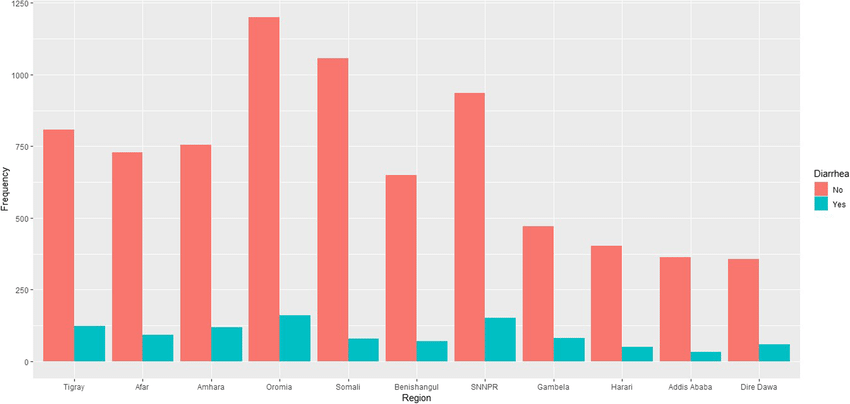 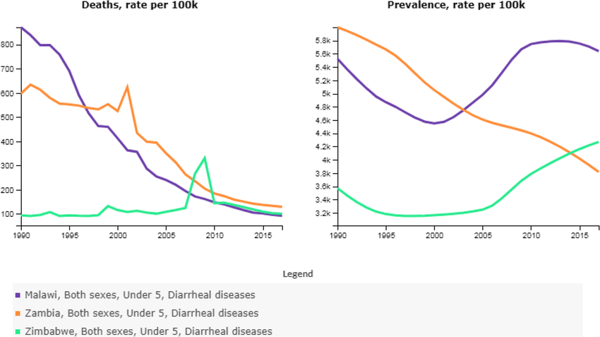What are SDGs?
The Sustainable Development Goals are the blueprint to achieve a better and more sustainable future for all. They address the global challenges we face, including those related to poverty, inequality, climate change, environmental degradation, peace and justice. The 17 Goals are all interconnected, and in order to leave no one behind, it is important that we achieve them all by 2030. Click on any specific Goal below to learn more about each issue and take action.
SDGs : Goal 6
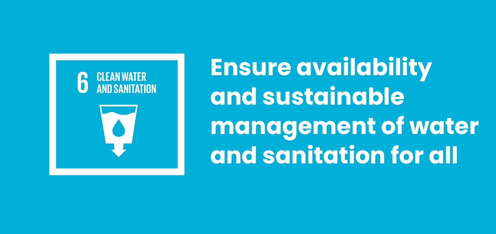
Billions of people still lack access to safe water, sanitation, and hygiene, despite improvement in the provision of these basic services. Water scarcity is a growing problem in many parts of the world, and conflicts and climate change are exacerbating the issue. In addition, water pollution is a significant challenge which affects both human health and the environment in many countries.

The COVID-19 pandemic poses an additional impediment, impairing access for billions of people to safely managed drinking water, sanitation and hygiene services – services desperately needed to prevent the virus from spreading.
Now more than ever the world needs to transform the way it manages its water resources and delivers water and sanitation services for billions of people. Urgent action is needed to overcome this global crisis, as it is affecting all countries around the world, socially, economically and environmentally.
Sustainable Development Goal 6 (SDG 6) on water and sanitation, adopted by United Nations Member States at the 2015 UN Summit as part of the 2030 Agenda for Sustainable Development, provides the blueprint for ensuring availability and sustainable management of water and sanitation for all.
Our project, The Roll-Aqua Barrel with a built-in purifier system, directly addresses Goal 6 of the Sustainable Development Goals (SDGs): Clean Water and Sanitation in several ways:
Addressing Water Scarcity:
Improving Water Quality:
Additional Benefits:
Reference:
the UN Sustainable Delevelopment Goals
Goal 6
Key Tech Analysis
Turbidity Sensor
A turbidity sensor is a device that measures the cloudiness or haziness of a liquid, typically referring to the presence of suspended solids like silt, algae, or microorganisms. It works by using light to detect the amount of scatter caused by these particles in the liquid. Here's a breakdown of its key aspects:Function:
Types:
Output:
Applications:
Factors to consider when choosing a turbidity sensor:
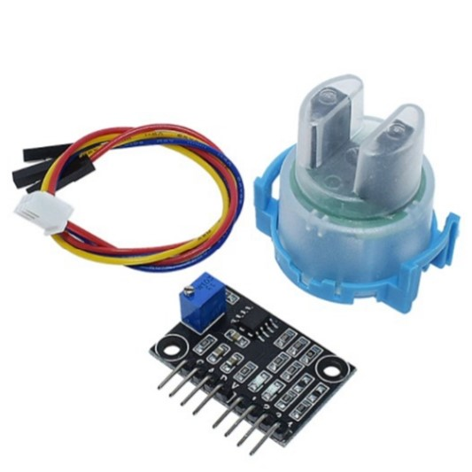
LGZD Sensor
The LGZD sensor is a specific model of turbidity sensor, primarily used for hobbyist projects and educational purposes. Here's a breakdown of its key features:
Type: Nephelometric sensor, measuring scattered light at 90 degrees from the original beam.
Output: Analog voltage (0-4.5V) proportional to the turbidity level. Higher voltage indicates clearer water.
Operating voltage: 5V DC
Current consumption: 30mA (maximum)
Response time: < 500ms
Operating temperature: -30°C to 80°C
Benefits:
Limitations:
Applications:
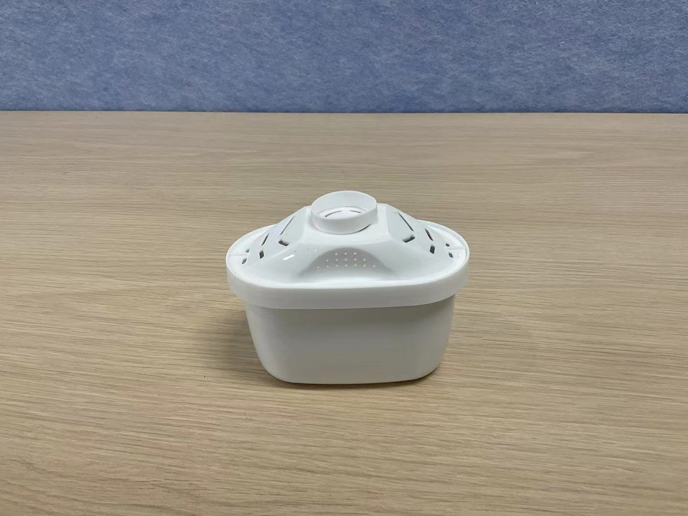
Pitcher Filter
Pitcher filter is a convenient and cost-effective solution for improving the quality of tap water at home. With its user-friendly design, the pitcher filter provides an accessible way for individuals and families to enjoy clean and better-tasting water. The built-in filtration technology effectively removes impurities, including chlorine, sediment, and contaminants, ensuring that every sip is refreshing and safe.
Main key features:
Market Analysis
Introduction
This market research analysis assesses the potential of a water barrel with a built-in water purifier system, particularly in LDC areas facing water scarcity or quality issues. There are some existing water roller and water filter in the market that resemble a little with the described functionality of this water barrel with a built-in water purifier. Few existing water barrels are called “Hippo Roller”, “Q-drum” and “Water Roll”.
Hippo RollerThe Hippo Roller is a simple design that holds 24 gallons (91 liters) of water and easily rolls over most terrain. Hippo Roller reduces the time and energy exhausted from fetching water from a well. Hippo Roller has also been recognized within Southern Africa as a lead innovator and its story is being used by start-up and educational institutions as a prime example of successful social entrepreneurship.
Hippo Roller Market:
The above figures are derived from Hippo Roller’s Sales Forecast (converted from South African Rand, to British Pounds at £1:R18).
Q Drum
The idea of the Q Drum originated in response to the needs of rural people in Southern Africa who struggle conveying adequate quantities of potable water from a reliable source. A task generally bestowed on the women and children of each community. Q Drum addresses the problem of reducing the load yet increasing volume by rolling water in a cylindrical vessel.
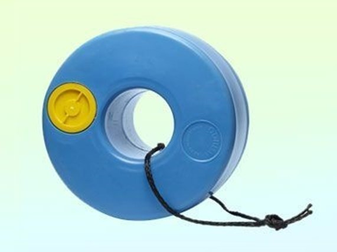Q-drum Market:
Reference:https://akvopedia.org/wiki/Q_Drum
Market Demand
Water Scarcity Impact:
This heightened demand is driven by a collective awareness of the importance of water conservation and the need for reliable purification technologies. As governments implement regulations and initiatives to address water management challenges, businesses and consumers seek water-efficient technologies, fostering the development and market demand for products that mitigate the effects of water scarcity.
In response to changing water-use patterns in agriculture and industry, there is a notable rise in the adoption of advanced water management solutions. Furthermore, water scarcity stimulates innovation in water purification technologies, leading to the emergence of products such as water barrels with built-in purifiers. These products not only address immediate challenges but also contribute to long-term water sustainability, aligning with the collaborative efforts of communities and the global imperative to adapt to climate change's impact on water resources.
Affordability and Accessibility:
Affordability is a critical factor affecting accessibility, directly impacting the level of demand for the water barrel with a built-in purifier system. The affordability of such products plays a crucial role in determining their accessibility to a broad consumer base. If priced competitively and within reach of the target market, the product becomes more accessible, fostering greater demand. Affordability considerations are particularly significant in regions facing water scarcity, where the accessibility of cost-effective solutions is vital.
Striking a balance between quality and affordability is key to ensuring widespread adoption. Additionally, accessibility is not only related to pricing but also encompasses distribution channels, ensuring the product is readily available through various means such as local retailers, online platforms, or collaborations with community organizations. A product's success hinges on its ability to be both affordable and easily accessible, enabling it to meet the diverse needs of consumers and communities grappling with water scarcity or quality issues.
Awareness and Education:
Awareness and education are paramount factors shaping the market for products like water barrels with built-in purifier systems, particularly in areas facing water scarcity or quality challenges. Effective awareness campaigns are instrumental in informing consumers about the significance of clean water and the existence of innovative solutions like these barrels.
Increased awareness fosters a deeper understanding of the product's benefits, encouraging consumers to prioritize water quality and conservation. Education also plays a pivotal role in showcasing how the built-in purifier addresses specific water-related issues, contributing to improved health and well-being. Businesses must invest in comprehensive educational initiatives, utilizing various channels to disseminate information about the product's features, usability, and long-term advantages. By elevating consumer knowledge, businesses can not only stimulate demand but also cultivate a sense of responsibility towards sustainable water practices, aligning with global efforts to address water-related challenges.
Competitive Landscape
The competitive landscape for water barrels with built-in purifier systems is dynamic, influenced by the presence of existing products such as “Hippo Roller” and “Water Roll” which are emerging innovations addressing water scarcity and quality concerns. Companies operating in this space compete not only based on the effectiveness of their purification technology but also on factors such as pricing, durability, and additional features. Understanding and strategically positioning the product within this landscape is crucial for success. Collaboration with governmental bodies, NGOs, or partnerships with local distributors can enhance market reach. Continuous monitoring of competitor strategies, customer feedback, and technological advancements ensures adaptability to evolving market conditions, allowing companies to differentiate their offerings effectively and meet the increasing demand for reliable water solutions in LDC facing water-related challenges.
Challenges and Considerations
Affordability and Accessibility: Ensuring that the water barrel with a built-in purifier remains affordable and accessible to the population in Least Developed Countries (LDCs) is crucial. The product should be priced in a way that aligns with the economic constraints of these regions, facilitating widespread adoption and usability.
Cultural Relevance and Education: Designing the product with cultural sensitivity and implementing effective educational initiatives are key considerations. Tailoring the product to align with local cultural practices and providing clear, simple educational materials can enhance acceptance and proper usage.
Infrastructure and Power Supply: Overcoming infrastructure limitations and addressing power supply challenges are critical for the success of the water barrel. Designing the product to be durable, easy to maintain, and capable of functioning without a constant power supply ensures its effectiveness in areas with limited infrastructure and unreliable electricity.
Market Status
The current market for water barrels primarily consists of conventional storage solutions, with a limited presence of innovative features such as built-in water purifiers. While there are existing options for water storage, the integration of an efficient water purifier within a water barrel is a unique proposition.This novel approach aims to address the growing concerns related to water quality in various regions, especially those facing water scarcity or contamination issues. Our water barrel, equipped with an advanced in-built water purifier, stands out as a more efficient and comprehensive solution. This distinct feature not only ensures adequate water storage but also guarantees a reliable source of clean and purified water, meeting the evolving demands of consumers who prioritize both functionality and water quality.
As environmental consciousness rises and the need for self-sustaining water solutions becomes more prevalent, our product is poised to carve a niche in the market by providing a practical and innovative solution to the challenges associated with water storage and purification. The market for a water barrel with a built-in water purifier system holds promising potential in addressing water scarcity and quality concerns, particularly in underserved communities. Careful consideration of target needs, affordability, technology choices, and marketing strategies are crucial for success.
Selling Strategy for Roll-Aqua Barrel in Least Developed Countries (LDCs)
Target Market Analysis
Understanding the unique challenges and needs of the target market is crucial. In LDCs, accessibility, affordability, and reliability are key factors. Consider local customs, preferences, and socioeconomic factors.Product Offering
Complete Water Solution Package: Barrel, Integrated Filter, Cleanliness Checking Device.
Filter Package: Integrated Filter and Cleanliness Checking Device.
Barrel: For water storage and easy transportation.
Integrated Filter: Easily attaches to the barrel for water purification.
Cleanliness Checking Device: Standalone device for water quality assessment.
Pricing Strategy
1. Affordable Packages:
2. Flexible Payment Options:
3. Promotions and Discounts:
Distribution Channels
1. Local Partnerships:
2. Door-to-Door Sales:
3. Community Engagement:
Marketing
1. Digital Campaigns:
2. Educational Materials:
3. Influencer Collaborations:
After-Sales Support
1. Training Programs:Continuous Improvement:
By combining affordability, adaptability, and strategic marketing, this selling strategy aims to make clean water solutions accessible to all in LDCs, contributing to improved health and well-being.
Innovation
The Roll-Aqua Barrel stands as an innovative solution to address the critical issue of limited access to drinkable water in LDC (Less Developed Countries) regions. Designed with the primary focus on cost-effectiveness, accessibility, low maintenance, and user-friendly operation, this portable water transport system aims to significantly alleviate the burden associated with water scarcity.
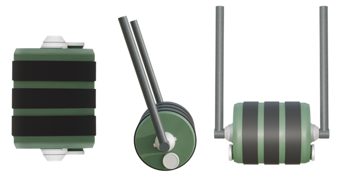By providing a practical and affordable means of water filtration and transportation, the Roll-Aqua Barrel becomes a crucial tool in enhancing water accessibility and security, ultimately contributing to improved health and well-being in LDC communities. The design's simplicity and efficiency align with the specific needs of these regions, ensuring that it serves as a sustainable and impactful solution to a pressing problem.
The inclusion of a built-in filtration system is a game-changer, empowering individuals to purify water on-site without the need for external resources. This not only reduces the dependence on centralized water sources but also mitigates the arduous task of traveling long distances to fetch drinkable water.
Furthermore, the external turbidity sensor provides real-time feedback on water quality, allowing users to visibly confirm clear filtration and make informed decisions about safe consumption. This transparency builds trust and promotes responsible water use.
User scenario
First Scenario - Water Transport Ease:
As I wake up in my village, the realization hits that fetching water for daily use involves a long and strenuous journey. Carrying a large amount of water is not only heavy but also exhausting. However, with the Roll-Aqua Barrel, the task becomes remarkably easier. I assemble the barrel, and instead of lifting the weight, I simply roll it effortlessly to the distant water source. The convenience of dragging or rolling the barrel minimizes the physical strain, making water transportation a much more manageable and efficient process.
Second Scenario - Purification at the Source:
Living in an area where drinkable water is inaccessible, I find myself near a river, a potential source of water. However, the water in the river is not safe to drink. With the Roll-Aqua Barrel, equipped with an integrated water purification system, I can collect water from the nearby river without worry. The filtration system ensures that any water source, no matter how impure, can be turned into safe and drinkable water right at the point of collection, providing a vital solution to water scarcity.
Third Scenario - Selective Water Usage:
After collecting water from the river, I realize that I don't need to purify all of it for my daily use. The Roll-Aqua Barrel comes to the rescue with its innovative design. I open the separate lid dedicated to non-purified water, allowing me to use the collected water without passing it through the purification system. This thoughtful feature not only conserves energy but also ensures that resources are used judiciously according to specific needs.
Final Design
Model Process and Prototyping

Fusion 360 Model
The entire model was completed in Fusion360. We modeled it to realize some design considerations such as the detachable handles for it to stand vertically to either change the filter and/or fill it with water and extract water from the other end of the container where the clean water is.

 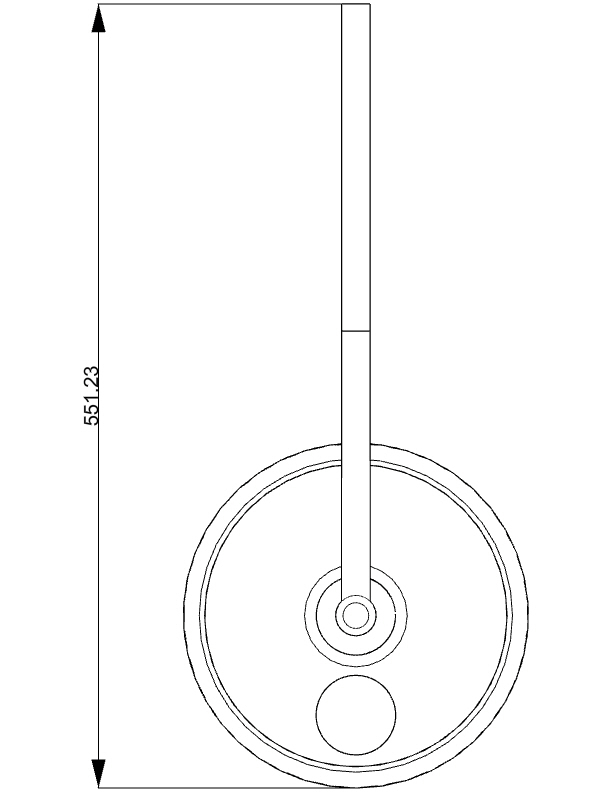
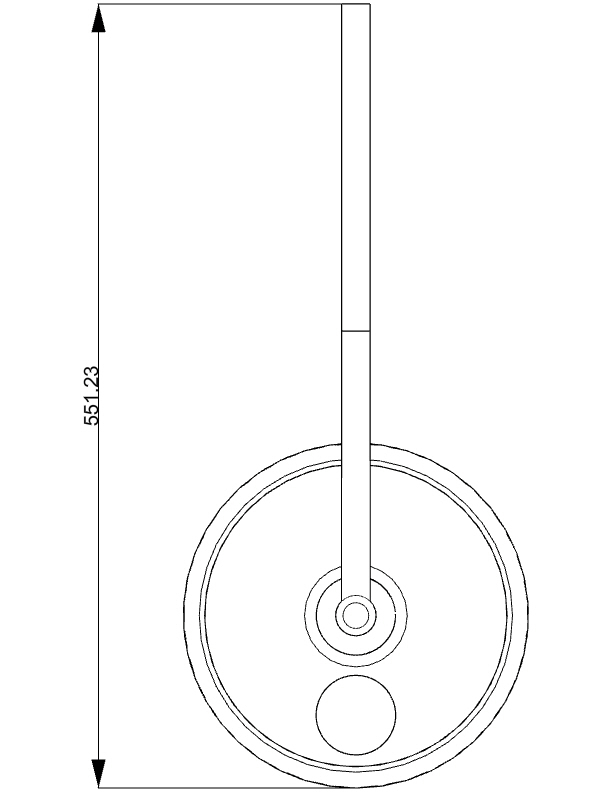
 Model preview in Fusion 360 :
Model preview in Fusion 360 :
Prototyping and Assembly
Parts were both 3D Printed and LaserCut. Below is the full assembly of parts for the Roller Prototype. The model has been scaled down for prototyping and demonstration purposes. Through 3d printing, we used ABS filament.

Assembly Demo
An illustration and video demonstrating how we assembled the prototype.


In this video, we demonstrate the water passing through the filter.
Barrel Handle are removable to position vertically in order to access and change the filter, add and take water from the filter.

Materials Used
Water Purification check with Arduino
Turbidity Monitoring:The turbidity sensor is placed in the water to be filtered. It continuously measures turbidity levels in the water.
Arduino Processing:The Arduino reads turbidity sensor data. It categorizes water quality into:

based on predefined thresholds
Arduino code:
#include <Wire.h>
#include <LiquidCrystal_I2C.h>
LiquidCrystal_I2C lcd(0x27, 16, 2);
int sensorPin = A0;
void setup() {
Serial.begin(9600);
lcd.begin(16, 2); // Initialize the LCD with 16 columns and 2 rows
pinMode(2, OUTPUT);
pinMode(3, OUTPUT);
pinMode(4, OUTPUT);
}
void loop() {
int sensorValue = analogRead(sensorPin);
Serial.println(sensorValue);
int turbidity = map(sensorValue, 0, 750, 100, 0);
delay(100);
lcd.setCursor(0, 0);
lcd.print("turbidity:");
lcd.print(" ");
lcd.setCursor(10, 0);
lcd.print(turbidity);
delay(100);
if (turbidity < 20) {
digitalWrite(2, HIGH);
digitalWrite(3, LOW);
digitalWrite(4, LOW);
lcd.setCursor(0, 1);
lcd.print(" its CLEAR ");
}
if ((turbidity > 20) && (turbidity < 50)) {
digitalWrite(2, LOW);
digitalWrite(3, HIGH);
digitalWrite(4, LOW);
lcd.setCursor(0, 1);
lcd.print(" its CLOUDY ");
}
if (turbidity > 50) {
digitalWrite(2, LOW);
digitalWrite(3, LOW);
digitalWrite(4, HIGH);
lcd.setCursor(0, 1);
lcd.print(" its DIRTY ");
}
}